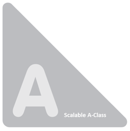
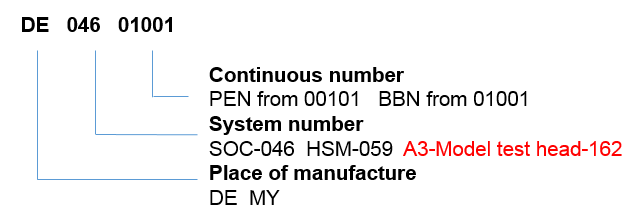
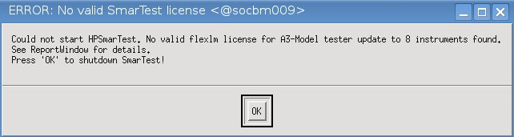
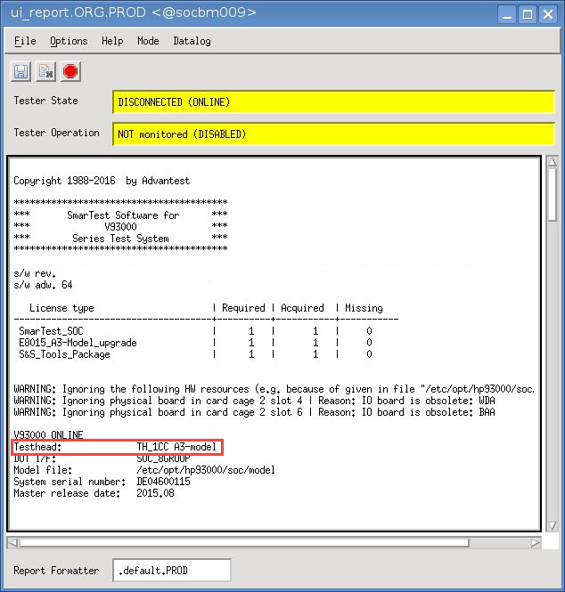

Scalable A-Class test head
The Scalable A-Class test head (Scalable A-Class) targets engineering, bench test and manufacturing test of smart devices, sensors, wearables and low pin-count, cost sensitive analog devices.
The Scalable A-Class test head is based on the ATH hardware and supports the operation of up to three instruments at the same time. SmarTest includes a software check at start-up to differentiate between ATH and Scalable A-Class. This check ensures that a maximum of three instruments can operate at the same time in the Scalable A-Class. Upgrade licenses are available which enable operation of up to eight instrument in the Scalable A-Class.
Hardware introduction of Scalable A-Class
The hardware of the new Scalable A-Class is identical to the current ATH. It is labeled in a similar way as the existing Test heads. SmarTest ensures that a maximum of three instruments can operate at the same time in the Scalable A-Class. In order to differentiate quickly the Scalable A-Class from the A-Class, the logo of the Scalable A-Class includes also the text "Scalable A-Class".

System serial number format of Scalable A-Class
SmarTest requires an online license to start, which is bound to system serial number. If it is not given, no license can be checked out for online start. This check applies to all test heads.
For the Scalable A-Class this software check includes also the number of instruments installed and limits the operation to up to three instruments at the same time.
Definition
System serial number format: "CCYYMxxxxx"
CC = Country Code
YY = Last digits of the year, in which the product had its first shipment.
M = Month of product first shipment (1=Jan, 0=Oct, A=Nov, B=Dec)
xxxxx = 5 digits serial number (starting at 00051).
For the Scalable A-Class the system serial number format has been extended. For the Scalable A-Class it is "162".
Example

Based on the serial number format, SmarTest is able to differentiate between ATH and Scalable A-Class.
Product upgrade and licenses
The Scalable A-Class supports operation of maximal three instruments at the same time. If more than three instruments are detected in the test head, the SmarTest software checks for an upgrade license. If the license cannot be checked out, the following error message will be shown and the operation will be suspended.

Product upgrade
Upgrade Licenses are available for the Scalable A-Class which enable full operation of all 8 slots in the test head.
The license type is per system and floating. It can be either perpetual or for 30 days or for 6 months.
Product licenses
Following system level licenses can be ordered for the upgrade of Scalable A-Class to A-Class capabilities. Please check V93000 license products for more details.
- N8015UPRM Upgrade license, Scalable A-Class 8 slot enabling, per system, floating, perpetual
- N8015UP30DA Upgrade license, Scalable A-Class 8 slot enabling, per system, floating, 30 days
- N8015UP6MO Upgrade license, Scalable A-Class 8 slot enabling, per system, floating, 6 months
Rules for instrument counting in Scalable A-Class
The Scalable A-Class counting rules count each of the following products as one instrument:
- all digital cards
- all DPS cards (DC Scale and legacy cards)
Below is a quick look-up table:
Card category |
Product |
SmarTest check and counting |
|---|---|---|
Digital cards |
Pin Scale 1600A/B |
1 |
|
Pin Scale 9G |
1 |
DPS cards |
DPS64 |
1 |
|
DPS128 |
1 |
|
UHC4 / UHC4T |
1 |
|
PVI8 |
1 |
|
AVI64 |
1 |
The following products are not counted and can be operated in addition to the instruments listed above:
- Utility DSP and MUX cards
SmarTest related
The Scalable A-Class will be shown in the Report window of SmarTest as below.

Hardware support
The Scalable A-Class shares the same hardware support strategy as ATH. For details about ATH related service documentation, please refer to the following links:
- ATH Site Planning and Preparation Guide
- ATH Cooling Unit Guide
- ATH Manipulator Guide
- ATH Installation Guide
- ATH Service Guide Part 2
Functional changes
- Introduced in SmarTest 7.3.4
- SmarTest 7.4.1: Support of Scalable A-Class.